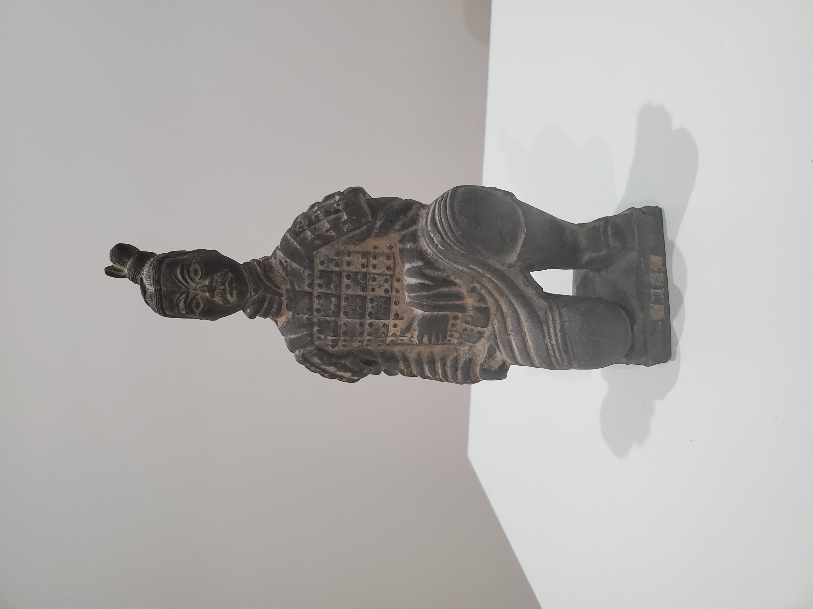

“As a child growing up in a predominantly white place, I struggled with understanding my cultural identity and developing meaningful connections with my cultural heritage outside of language and family. My grandpa gave me this Teracotta warrior figurine one year as a gift, telling me the story of the Teracotta warriors. I was enamoured with the history and it was one of the first times I felt Chinese.
Even though these figurines were probably merely ubiquitous gift shop presents (as a matter of fact my roommate many years later had a very similar one), it was incredibly meaningful to have a definitively Chinese object that I owned. And so now as it sits on my dresser, every time I look at it, I am reminded of my Chinese identity and the family I have back in China.”{ 1 }
Nicholas Yuan
2005
